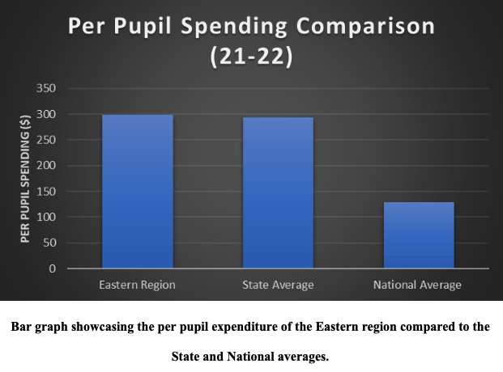

The Eastern Region of Virginia includes Accomack County, Northampton County, Westmoreland County, Northumberland County, Richmond County, Essex County, Lancaster County, Middlesex County, and King and Queen County. All these counties have a small set of students, making up about 1.15% of students enrolled in Virginia public schools during the 2021- 2022 school year, with the only exception being Accomack County having a much larger set of students. The Eastern region as a whole has about 14.5 thousand students enrolled in public schools across the various counties. The overall spending for the county was approximately 4,306,944 dollars for the 2021-2022 school year. However, the Per-Pupil Spending (PPS) is varied and spread out. Most counties did not have a huge budget during the years of COVID-19 or even after COVID-19, with a major exception being Accomack County, yet again. There was a surprising set of counties that cut down on their budget after the coronavirus pandemic; Accomack County, Essex County, King and Queen County, and Lancaster County. The mental health services provided in schools include drug counseling, suicide prevention, and learning and behavior accommodations. Along with these services, students are frequently taught lessons in order to raise awareness. These lessons may include general health education, drug and alcohol education, and information about support programs.
The budget allocations for the Eastern region, as seen in the graph below, represent about 1% of the state’s spending, which is proportional to the 1.15% student population in this region.
The per pupil spending across the Eastern region comes to an average of of about $299. The average per-pupil expenditure in Virginia comes to about $293, while the national average is about $129. The Eastern region’s average is just above the state average PPS.
